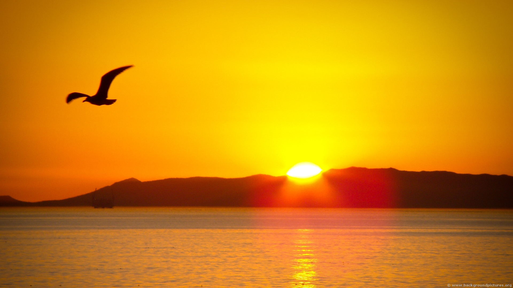

OverviewThis is an animation/model of our solar system showing the movement of the sun, planets and some asteroids and comets relative to the Earth. The distance between planets is not to scale, but the size of planets are with the exception of the sun as it is to massive. The velocities of the planets, asteroids and comets are also estimates. Hover over the names of the bodies to only show that body and the Earth, click on them for more info. Some of the comets might not be visible due to them being off screen. |
SunFor many of us the sun has a semi-constant presence, only disapating at night. Its presence depends on one's longitude. the closer one is to either pole, the more sunlight one will recieve during the summer and less during the winter. We see the Sun as the brightest and largest object in the sky and on average the earth is 150 million kilometers away from the sun. That distance is key to life on earth, if the Earth were any closer we would all burn, and if we were further we would all freeze. |
MercuryThe object on the very bottom is MercuryMercury is the hardest planet to spot of the five that can be spotted with the naked eye. The closest it can be from the earth would be around 92 million kilometers and the furthest it can be would be 206 million kilometers |
VenusVenus is the second brightest object in the sky. It is 100,000,00km away from the sun, the closest it can be from earth would be 40 million km and the furthest away would be 256 million kilometers. |
EarthEarth is our home planet with a single known natural satellite, the Moon. The Moon completes one full rotation every 27 days and is on average around 384 thousand kilometers away from the Earth. The Moon is essential to the Earth as it ceates tides using its gravitational pull and regulates climate by slowing down Earth's rotation. |
Mars The white dot that looks like a piece of dust to the bottom right of the moon.
The white dot that looks like a piece of dust to the bottom right of the moon.
Mars is the second hardest planet to spot of the five visible to the naked eye. The closest it can be to the Earth would be 78 million kilometers and the furthest would be 378 million kilometers. |
VestaVesta is the brightest asteroid in our solar system. The closest it would be to the Earth would be around 200 million kilometers and the furthest would be 490 millionk kilometers. |
CeresCeres is the largest known asteroid in the asteroid belt. The closest to the Earth it can be would be 263 million kilometers and the furthest would be 563 million kilometers. |
JupiterJupiter is the largest planet in our solar system and one of the most imporant ones. Due to how close it is to the Sun and its sheer mass, it creates a gravitational field so strong that it flings meteors out of their potential path towards the Earth. The closest it can be to Earth would be 628 million kilometers and the furthest it can be would be 928 million kilometers. Jupiter is also the furthest of the five planets that can be seen with the naked eye. |
SaturnSaturn is the first gas giant that requires a telescope to be seen. The closest it can be from the Earth would be 1293 million kilometers and the furthest would be 1594 million kilometers, that's pretty far. |
UranusTop leftUranus is one of the furthest planets from the Sun and the Earth. The closest it could be from the Earth would be around 2650 million kilometers and the furthest would be 2950 million kilometers. |
NeptuneNeptune is the furthest planet from the Sun in our solar sytem, it is 30.7 times further away from the Sun than we are. The closest it could be from the Earth would be 4350 million kilometers while the furthest would be 4650 million kilometers. |
Halley's CometHalley's Comet is one of the worlds most famous comets. First observed and recorded by the Chinese in 239 BC, it comes back every 75-76 years. Halley's Comet was identified by astronomer Edmond Halley; after examining 3 seperate comet reports, he concluded that they were the same one. The last sighting of Halleys' comet was in 1986 and the next one will be in 2061. |
Ikeya-ZhangComet Ikeya-Zhang is a comet that was discovered without the use of automated computers in 2002 by two ameteur astronomers, Kaoru Ikeya, in Japan and Daqing Zhang in China. It has one of the longest orbits known to us, around 341 years. The most recent observation was in 2002 and the next one will be in 2343. |